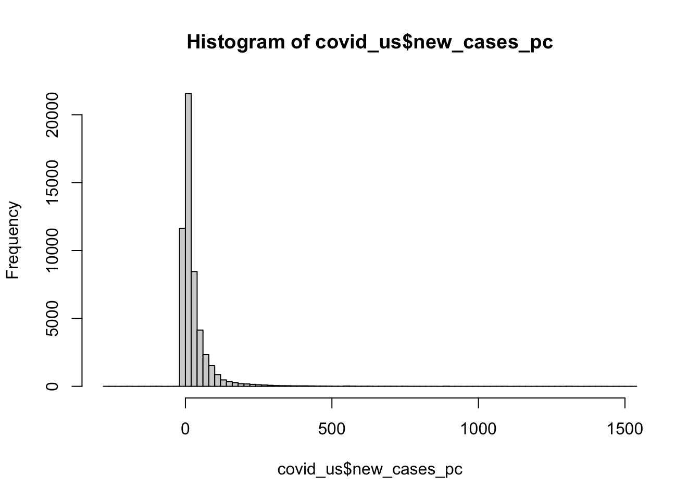
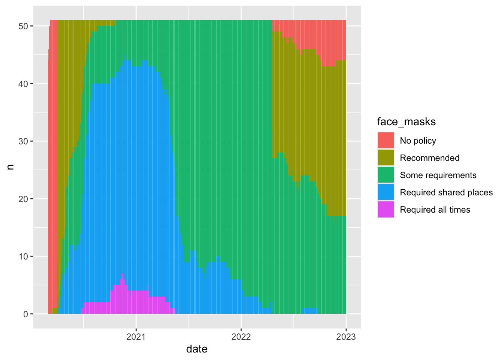
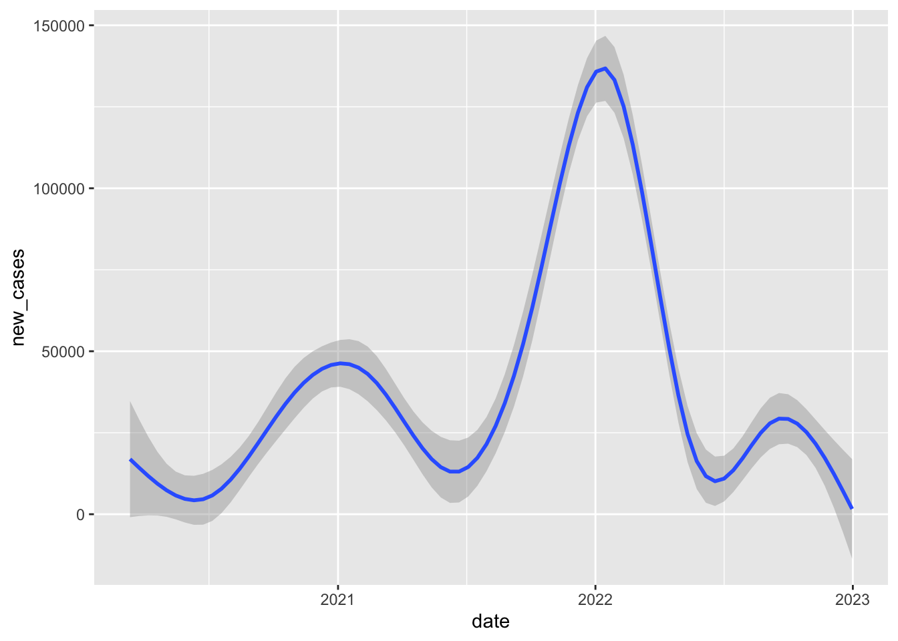

# install.packages(c("lubridate","DT"))Lab 01 - Exploring data on COVID-19 in the U.S.
Overview
Today, we’ll continuing exploring the COVID-19 data for the U.S.
We covered a lot of ground in our last lecture. Conceptually, talked about how to
- Write and code in R Markdown
- Install and load packages
- Download and inspect data
- Clean and recode data
- Calculate simple descriptive statistics with that data
To do this, we copied and pasted a lot of code. Today, we’ll get practice writing our own code. Specifically we will
- Repeat some steps from lecture to get our workspace and data set up
- Recode some additional variables
- Investigate what negative values mean for face mask policy
- Explore, in greater depth, tools for descriptive inference
- Revisit the question of face masks and new cases, conditioning on time.
1 Getting set up
- Save this document in a folder for the class
- Set your working director: Session > Set Working Directory > Source file location
- It’s not vital today, but it’s a good habit to develop.
2 Install the some additiona packages
- In the code chunk below, we’ll use the
install.packages()function to install thelubridateandDTpackage packages - Uncomment the code by removing #
- Run the code “Live” by sending the command to your console
- Once
lubridateis installed, comment the code out by placing a # at the start of the line
The 'lubridate package is a collection of functions that makes working with dates and time more simple.
The DT package allows us to display data tables in a searchable format in our html output.
3 Load the packages we’ll be using today
- Create a code chunk
- Label your code chunk “packages”
- Use the
library()to load the following packagestidyverseCOVID19lubridateDT
library(tidyverse)── Attaching core tidyverse packages ──────────────────────── tidyverse 2.0.0 ──
✔ dplyr 1.1.4 ✔ readr 2.1.5
✔ forcats 1.0.0 ✔ stringr 1.5.1
✔ ggplot2 3.5.1 ✔ tibble 3.2.1
✔ lubridate 1.9.4 ✔ tidyr 1.3.1
✔ purrr 1.0.2
── Conflicts ────────────────────────────────────────── tidyverse_conflicts() ──
✖ dplyr::filter() masks stats::filter()
✖ dplyr::lag() masks stats::lag()
ℹ Use the conflicted package (<http://conflicted.r-lib.org/>) to force all conflicts to become errorslibrary(COVID19)
library(lubridate)
library(DT)4 Download the COVID19 Data for U.S.
Open up the slides from last class and copy and paste the relevant code into the code chunk below.
# Download the COVID-19 data
# # Code below produces:
#
# covid <- COVID19::covid19(
# country = "US",
# start = "2020-01-01",
# end = "2022-12-31",
# level = 2,
# verbose = F
#
# )
#
# # Produces file saved here:
load(url("https://pols1600.paultesta.org/files/data/covid.rda"))5 Replicate the data cleaning and recoding from class
Specifically please do the following:
- Create a object called
territoriesthat is a vector containing the names of U.S. territories
- Use
<-andc()(slides)
- Create a new dataframe, called
covid_us, by filtering out observations from the U.S. territories- Use<-,%>%,filter(),!and%in%` (slides) - Create a
statevariable that is a copy of theadministrative_area_level_2
- Use
%>%,mutate()and->
- Create a variable called
new_casesfrom theconfirmed. Create a variable callednew_cases_pcthat is the number of new Covid-19 cases per 100,000 citizens
- Use
%>%,group_by(),mutate()andlag(), `/and*(slides)
- Create a variable called
face_masksfrom thefacial_coveringsvariable. (slides)
- Treat negative and positive values the same.
- Recode numeric values so that they have meaningful labels
- Save as a factor variable so that the labels are ordered in terms of increasing levels of severity/restrictions
# ---- 1. Create territories object
territories <- c(
"American Samoa",
"Guam",
"Northern Mariana Islands",
"Puerto Rico",
"Virgin Islands"
)
# ---- 2. Create covid_us data frame
covid_us <- covid %>%
filter(!administrative_area_level_2 %in% territories)
# ---- 3-5. Recode variables in covid_us
covid_us %>%
mutate(
state = administrative_area_level_2,
) %>%
dplyr::group_by(state) %>%
mutate(
new_cases = confirmed - lag(confirmed),
new_cases_pc = new_cases / population *100000
) %>%
mutate(
face_masks = case_when(
facial_coverings == 0 ~ "No policy",
abs(facial_coverings) == 1 ~ "Recommended",
abs(facial_coverings) == 2 ~ "Some requirements",
abs(facial_coverings) == 3 ~ "Required shared places",
abs(facial_coverings) == 4 ~ "Required all times",
) %>% factor(.,
levels = c("No policy","Recommended",
"Some requirements",
"Required shared places",
"Required all times")
)
) -> covid_usNext let’s compare our new face_mask variable to the original facial_coverings variable using the table command.
Uncomment the following code and replace the generic terms data, variable1, and variable2 with appropriate terms.
# table(data$variable1, data$variable2, useNA="ifany")table(covid_us$face_masks, covid_us$facial_coverings,useNA="ifany")
-4 -3 -2 -1 0 1 2 3 4
No policy 0 0 0 0 3893 0 0 0 0
Recommended 0 0 0 275 0 8604 0 0 0
Some requirements 0 0 7362 0 0 0 17424 0 0
Required shared places 0 5897 0 0 0 0 0 9191 0
Required all times 410 0 0 0 0 0 0 0 622You’ve just created a “crosstab” a frequency table showing the joint distribution of two variables.
Crosstabs are powerful tools for getting a sense of your data and for checking whether a recode did what you wanted it to do.
Finally, let’s create a few more variables called year_month from the date variable and a variable describing the percent of a state’s population that is fully vaccinated (percent_vaccinated), which we’ll use later in the lab.
5.1 Uncomment and run the following code
Highlight the commented code below from # covid_us %>% to # ) -> covid_us and press shift + cmd + C on a mac or shift + ctrl + C on PC to uncomment the code.
covid_us %>%
mutate(
year = year(date),
month = month(date),
year_month = paste(year, str_pad(month, width = 2, pad=0), sep = "-"),
percent_vaccinated = people_fully_vaccinated/population*100
) -> covid_us- The
year(date)extracts the year from ourdatevariable and saves it in new column calledyear - Similarly, the
month(date)extracts the month from ourdatevariable and saves it in a new column calledmonth - Finally the
paste()command pastes these two variables together, with thestr_pad()adding a leading 0 to single digit months. - To calculate the percent of states population that is fully vaccinated on a given date we divide the total number of fully vaccinated by the state’s population and multiply by 100 to make it a percent.
6 Exploring our data
From the documentation of the COVID19 package, we see that the numeric values of the facial_coverings correspond to following substantive policy regimes:
- 0 - No policy
- 1 - Recommended
- 2 - Required in some specified shared/public spaces outside the home with other people present, or some situations when social distancing not possible
- 3 - Required in all shared/public spaces outside the home with other people present or all situations when social distancing not possible
- 4 - Required outside the home at all times regardless of location or presence of other people
These data come from the Oxford Covid-19 Government Response Tracker. Oxford distinguishes between policies that are in effect for the entire administrative unit (e.g. the State of New York) and policies that may be in effect in only parts of the administrative unit (e.g. New York city)
In short: positive integers identify policies applied to the entire administrative area. Negative integers are used to identify policies that represent a best guess of the policy in force, but may not represent the real status of the given area. The negative sign is used solely to distinguish the two cases, it should not be treated as a real negative value.
Let’s get some practice using the filter(), select() group_by() and summarize(), and n() commands from dplyr package to understand how common each these negative values are in our data.
6.1 Uncomment and run the code below,
covid_us %>%
filter(facial_coverings == -4) %>%
select(date, state) %>%
group_by(state) %>%
summarize(
n = n(),
earliest_date = min(date),
latest_date = max(date),
)%>%
arrange(earliest_date)# A tibble: 4 × 4
state n earliest_date latest_date
<chr> <int> <date> <date>
1 Illinois 156 2020-10-01 2021-05-15
2 Massachusetts 35 2020-10-02 2020-11-05
3 South Carolina 61 2020-10-13 2020-12-12
4 Maryland 158 2020-11-06 2021-04-12 6.2 Please explain in words your best understanding of what each line of code is doing:
covid_us %>%tells R that every line of code after will usecovid_usdataframefilter(facial_coverings == -4) %>%tells R to filter out only the rows where the facial coverings variable equals -4select(date, state) %>%tells R to select the columns nameddateandstategroup_by(state) %>%tells R that subsequent commands should be done separately for each unique value ofstatesummarize(tells R we want to summarize the output of susequent commandsn = n(),tells R to count the number of observations (state-dates) for each state that had a value of -4 on thefacial_coveringsvariableearliest_date = min(date),tells R to report the earliest date that each state had a value of -4latest_date = max(date),tells R to report the last date that each state had a value of -4)%>%tells R we’re finished with thesummarize()functionarrange(earliest_date)arranges the data in asscending order from earliest to latest start date
You may find this cheatsheet useful and you can find a more detailed discussion here
Substantively, what does the previous chunk of code tell us?
- So there are five states that had -4 on the facial covering variable: Illinois, Maryland, Massachusetts, Montana, and South Carolina. Illinois was the first state where this code appears, and it appears present in 156 observations while Montana was the last adopting a policy code -4 on March 25, 2021
Filtering data, selecting specific variables, and summarizing variables are important skills that let us “know our data”
7 Look at the source data for face mask policies
To make sure we understand what this policy variable facial_coverings is measuring, let’s download the source data from Oxford
oxford_us <- read_csv("https://github.com/OxCGRT/USA-covid-policy/raw/master/data/OxCGRT_US_latest.csv")Rows: 56992 Columns: 81
── Column specification ────────────────────────────────────────────────────────
Delimiter: ","
chr (32): CountryName, CountryCode, RegionName, RegionCode, Jurisdiction, C1...
dbl (48): Date, C1_School closing, C1_Flag, C2_Workplace closing, C2_Flag, C...
lgl (1): M1_Wildcard
ℹ Use `spec()` to retrieve the full column specification for this data.
ℹ Specify the column types or set `show_col_types = FALSE` to quiet this message.Now let’s look at the policy on face masks for Illinois. From Oxford’s codebook, we learn that variables describing face mask policies all begin with the prefix H6_
Using common prefixes for a variable is a good habit that will help you organize and work with your data
7.1 Please run the following code:
oxford_us %>%
mutate(
date = ymd(Date)
)%>%
filter(RegionName == "Illinois",
date > "2020-08-01",
date < "2021-01-01",
!is.na(H6_Notes)) %>%
select(date,starts_with("H6_")) -> il_facemasks
il_facemasks# A tibble: 8 × 4
date `H6_Facial Coverings` H6_Flag H6_Notes
<date> <dbl> <dbl> <chr>
1 2020-08-21 2 1 "In Executive Order 2020-52, Executi…
2 2020-08-26 2 1 "Effective from 26 August 2020, the …
3 2020-09-18 2 1 "On 18 September, in Executive Order…
4 2020-10-01 4 0 "Originally coded a 3T, but looking …
5 2020-10-16 4 0 "In Executive Order (EO) 2020-59, Go…
6 2020-11-13 4 0 "Noting that Executive Order 2020-71…
7 2020-11-20 4 0 "Executive Order 2020-73 requires pe…
8 2020-12-01 3 1 "Chicago seems to have changed its g…7.2 Again, explain in words, what the components of this code are doing:
oxford_us %>%Tells R to use the Oxford policy datamutate(date = ymd(Date))%>%Creates adatevariable of classdatefrom the originalDatevariable (which was classnumeric)filter(RegionName == "Illinois",subsets the data to just Illinoisdate > "2020-08-01",filters out dates before August 1, 2020date < "2021-01-01",filters out observations with dates after January 1,2021!is.na(H6_Notes)) %>%filters out observations without notes (which appear in the data when policy changes)select(date,starts_with("H6_")) -> il_facemasksSelects just the date and notes variables and saves them to an object calledil_facemasksil_facemasksprints the obejct in the console
Let’s take a look at the H6_Notes variable for 2020-09-18
il_facemasks$H6_Notes[3][1] "On 18 September, in Executive Order 2020-55, the Governor reissued most executive orders, extending a majority of the provisions through 17 October 2020. This includes mask requirements. https://web.archive.org/web/20200922144918/https://www2.illinois.gov/Pages/Executive-Orders/ExecutiveOrder2020-55.aspx"Now update the code to select H6_Notes variable for 2020-10-01
il_facemasks$H6_Notes[il_facemasks$date == "2020-10-01"][1] "Originally coded a 3T, but looking at the below description, which includes even residential buildings, it is hard to conceive of a time outside the home when a Chicago resident would not be required to wear a mask. The Phase IV \"Gradually Resume\" guidelines seem not to provide any significant exemption (https://archive.fo/dOyY9). Hence code moves up to 4T. Effective October 1, 2020, residents of Chicago are required to wear masks in all public places. “Any individual who is over age two and able to medically tolerate a mask shall be required to wear a mask when in a public place, which for purposes of this Order includes any common or shared space in: (1) a residential multi-unit building or (2) any non-residential building, unless otherwise provided for in the Phase IV: Gradually Resume guidelines promulgated by the Office of the Mayor (\"Gradually Resume Guidelines\")” Additionally, but separately, “Individuals must, at all times and as much as reasonably possible, maintain Social Distancing from any other person who does not live with them.” https://web.archive.org/web/20201116163255/https://www.chicago.gov/content/dam/city/sites/covid/health-orders/CDPH%20Order%202020-9%20-%205th%20Amended%20FINAL%209.30.20_AAsigned.pdf"7.3 What have we learned about our variables measuring face_mask policy
In Illinois, the -4’s seem to correspond to more stringent mask policies implemented in Chicago relative to the rest of the state. So by collapsing negative and positive values of facial_coverings to construct our face_mask variable, we’re probably over stating the extent the extensiveness of policies in effect.
So we should be cautious in how we interpret our collapsed variable, face_mask. Perhaps we could construct another variable that distinguished state-level policies from more localized policies, or we could only look at cases where there was a uniform state policy.
8 Explore R’s functions for generating summary statistics
In class, we kind of rushed through our discussion of descriptive statistics. Let’s take a little time to review these concepts in more detail and see how to calculate them in R.
8.1 Measures of Central Tendency
Measures of central tendency describe what a typical value of some variable. In this course, we’ll use three measures of what’s typical:
- mean
- median
- mode
8.1.1 Mean
One of the most frequent measures of central tendency we’ll use in this course is a mean or average.
Suppose we have \(n\) observations of some variable \(x\). We can calculate the mean of \(\bar{x}\) (“x bar), by adding up all the values of x
[ {x}=_{i=1}^n x_i ]
We’ll see later in the course that means are closely related to the concept of expected values in probability and that conditional means (which we’ll calculate below) are central to thinking about linear regression.
For now, please calculate the mean (average) number of new cases per 100,000 residents in our data:
mean(covid_us$new_cases_pc, na.rm=T)[1] 29.40619Last class, when we calculated the the average number of new cases under each type of face mask policy, we were calculating a conditional mean the mean of some variable, conditional on some other variable taking a specific value.
Formally, you’ll often see this written in terms of Expected Values: Something like
[ E[Y|X=x] ]
Or to make it more concrete:
[ E[ | ] ]
In code, we could accomplish this manually, using the index operator:
mean(covid_us$new_cases_pc[covid_us$face_masks == "No policy"], na.rm=T)[1] 10.261688.1.1.1 How would we calculate the conditional mean of new_cases_pc when face_masks equals “Recommend”
mean(covid_us$new_cases_pc[covid_us$face_masks == "Recommended"], na.rm=T)[1] 16.61408By using group_by() with summarise() we can accomplish this more quickly:
covid_us%>%
group_by(face_masks)%>%
summarise(
new_cases_pc = mean(new_cases_pc, na.rm=T)
)# A tibble: 5 × 2
face_masks new_cases_pc
<fct> <dbl>
1 No policy 10.3
2 Recommended 16.6
3 Some requirements 36.2
4 Required shared places 29.4
5 Required all times 32.28.1.2 Median
The median is another measure of what’s typical for variables that take numeric values
Imagine, we took our data new Covid-19 cases and arranged them in ascending order, from the smallest value to highest value
The median would be the value in the exact middle of that sequence, also known as the 50th percentile.1
Formally, we can define that median as:
[ M_x = X_i : ^{x_i} f_x(X)dx=^f_x(X)dx=1/2 ]
Which might look like Greek to you, which is fine. Just think of it as the middle value.
8.1.2.1 Please calculate the median number of new Covid-19 cases per 100,000 using the median() function. How does it compare to the mean?
median(covid_us$new_cases_pc, na.rm=T)[1] 11.70289Interesting the median is much lower than the mean. If we were to look at a histogram of our data (more on that next week; think of it as a graphical representation of a frequency table), we see that the new_cases_pc has a “long tail” or is skewed to the right. Most of the values are close to 0, but there are few cases that are extreme outliers.
Medians are less influenced by outliers than means
hist(covid_us$new_cases_pc, breaks = 100)
8.1.3 Modes
Conceptually, a mode describes the most frequent outcome.
Modes are useful for describing what’s typical of “nominal” or categorical data like our measure of face mask policy.
To calculate the mode of our face_masks variable, wrap the output of table() with the sort() function
sort(table(covid_us$face_masks))
Required all times No policy Recommended
1032 3893 8879
Required shared places Some requirements
15088 24786 For numeric data, modes correspond to the peak of a variable’s density function (more on this later in the class).
You can get a sense of the relationship between, means, median’s and modes from this helpful figure from Wikipedia:

8.2 Measures of Dispersion
Measures of dispersion describe how much the data “vary.” Let’s discuss the following ways we can summarize how our data vary:
- range
- percentile range
- variance
- standard deviation
8.2.1 Range
The range of a variable is simply it’s minimum and maximum value
8.2.1.1 Please calculate the range of our new_cases_pc using the range() function
range(covid_us$new_cases_pc,na.rm = T)[1] -275.6916 1531.8669min(covid_us$new_cases_pc,na.rm = T)[1] -275.6916max(covid_us$new_cases_pc,na.rm = T)[1] 1531.8678.2.1.2 What states on what dates observed these minimum and maximum values?
covid_us %>%
filter(
new_cases_pc < -188 |
new_cases_pc > 1500
)%>%
select(state, date,new_cases_pc)# A tibble: 4 × 3
# Groups: state [4]
state date new_cases_pc
<chr> <date> <dbl>
1 Florida 2021-06-04 -189.
2 Rhode Island 2022-01-04 1532.
3 Nebraska 2022-10-28 -276.
4 Kentucky 2022-10-11 -198.8.2.2 Percentiles Ranges
The \(p\)-th percentile is the value of the observation such that 100*p percent of the data are to the left and 100-100*p are two the right.
[ p_x = X_i : ^{x_i} f_x(X)dx= p; ^f_x(X)dx=1-p ]
The median is just the 50th percentile
In R we calculate the \(p\)-th percentile using the quantile() setting the probs argument to the \(p/100\) percentile that we we want.
8.2.2.1 Please use the quantile() function to calculate the 25th and 75th percentiles of the new_cases_pc variable.
quantile(covid_us$new_cases_pc, probs = c(.25,.75), na.rm=T) 25% 75%
0.9694437 33.5341961 The 25th and 75th percentile define the “Interquartile Range” where 50 percent of the observations lie within this range, and 50 percent lie outside the range.
8.2.3 Variance
Variance describes how much observations of a given measure vary around that measure’s mean.
The variance in a given sample is calculated by taking the average of the sum of squared deviations (i.e. differences) around a measure’s mean.
[ ^2_x=_{i=1}n(x_i-{x})2 ]
- \(x_i-\bar{x}\) is the deviation of each observation from the overall mean
- \((x_i-\bar{x})^2}\) squaring this ensures that we treat positive and negative deviations the same when calculating the overall variance
- \(\sum_{i=1}\) sums up all the differences
- \(\frac{1}{n-1}\) is like taking the average of these differences (we divide by \(n-1\) instead of \(n\) for statistical reasons that we’ll return two when we talk about estimation)
Use the var() function to calculate the variance of the new_cases_pc variable.
var(covid_us$new_cases_pc,na.rm=T)[1] 3570.208# Calculate by hand
sum(
(covid_us$new_cases_pc - mean(covid_us$new_cases_pc,na.rm=T))^2,
na.rm=T
)/(sum(!is.na(covid_us$new_cases_pc))-1)[1] 3570.208Variance will be important for thinking about uncertainty and inference (e.g. how might our estimate have been different)
8.2.4 Standard Deviations
A standard deviation is simply the square root of variable’s variance.
[ _x== ]
Standard deviations are easier to interpet because their units are the same as variable.
Think of them as a measure of the typical amount of variation for variable.
Again, let’s use the sd() function to calculate the standard deviation of the new_cases_pc variable
sd(covid_us$new_cases_pc,na.rm=T)[1] 59.751228.3 Measures of Association
Measures of association describe how variables relate to each other.
8.3.1 Covariance
Covariance describes how two variables “co-vary”.
When \(x\) is above its mean, \(y\) also tends to be above it’s mean, these variables have a positive covariance.
If when \(x\) tends to be high, \(y\) tends to be low, these variables have a negative variance
Formally, the sample2 covariance of two variables can written as follows:
[ cov(x,y)=_{i=1}^n(x_i-{x})(y_i-{y}) ]
8.3.1.1 Please calculate the covariance between the percent of state’s population that is fully vaccinated (percent_vaccinated) and new_cases_pc using the var() function
var(covid_us$new_cases_pc,covid_us$percent_vaccinated,na.rm = T)[1] 13.776228.3.2 Correlation
Like variances, covariances don’t really have intrinsic meaning, since x and y can be measured on very different scales.
The correlation between two variables takes their covariance and scales this by the standard deviation of each variable, creating a measure that can range from -1 (perfect negative correlation) to 1 perfect positive correlation.
Again, we can write this formally
[ _{x,y} = ]
But don’t sweat the formulas too much. I’m just contractually obligated to show you math.
8.3.2.1 Calculate the correlation between the percent of state’s population that is fully vaccinated (percent_vaccinated) and new_cases_pc using the cor() function.
You’ll need to set the argument use="complete.obs
cor(covid_us$percent_vaccinated, covid_us$new_cases_pc, use = "complete.obs")[1] 0.008977781Hmm… That seems a little strange. What if we calculated the correlation between vaccination rates and new cases separately for each month in 2021
8.3.2.2 Uncomment and interpret the output of the code below
covid_us %>%
filter(year > 2020)%>%
ungroup() %>%
group_by(year,month)%>%
summarise(
mn_per_vax = mean(percent_vaccinated, na.rm=T),
cor = cor(new_cases_pc, percent_vaccinated, use = "complete.obs")
)`summarise()` has grouped output by 'year'. You can override using the
`.groups` argument.# A tibble: 24 × 4
# Groups: year [2]
year month mn_per_vax cor
<dbl> <dbl> <dbl> <dbl>
1 2021 1 0.988 -0.304
2 2021 2 6.01 -0.306
3 2021 3 14.8 0.0107
4 2021 4 28.3 0.0503
5 2021 5 40.9 -0.102
6 2021 6 47.4 -0.206
7 2021 7 50.3 -0.290
8 2021 8 52.4 -0.334
9 2021 9 55.4 -0.288
10 2021 10 57.8 -0.146
# ℹ 14 more rows9 Facemasks and New Cases of Covid-19
Let’s return to the question of the average number of new Covid-19 cases (per 100,000) for different types of face mask policies.
We ended our previous class with this result:
covid_us %>%
filter(!is.na(face_masks))%>%
group_by(face_masks)%>%
summarize(
new_cases_pc = round(mean(new_cases_pc, na.rm=T),2)
) -> face_mask_summary
face_mask_summary# A tibble: 5 × 2
face_masks new_cases_pc
<fct> <dbl>
1 No policy 10.3
2 Recommended 16.6
3 Some requirements 36.2
4 Required shared places 29.4
5 Required all times 32.29.1 What do these averages really tell us?
Probably not that much. Different Face mask policies are implemented at different times in the pandemic. For example, by 2021, almost all states have some requirements. Comparing the average for new cases in states with no policy to states with full requirements, is comparing the state of world in early 2020 to the state of the world in late 2020 to mid 2021. But lots of things differ between these periods. Other policies are also going into effect, new variants are emerging.
In short, those simple conditional means across the full data don’t really provide an apples to apples comparison.
covid_us%>%
group_by(date,face_masks)%>%
summarise(
n = n()
)%>%
filter(date >= "2020-03-01")%>%
ggplot(aes(date,n,fill=face_masks))+
geom_bar(stat="identity")`summarise()` has grouped output by 'date'. You can override using the
`.groups` argument.
covid_us%>%
group_by(date,face_masks)%>%
summarise(
new_cases = sum(new_cases)
)%>%
filter(date >= "2020-03-01")%>%
ggplot(aes(date,new_cases))+
geom_smooth()`summarise()` has grouped output by 'date'. You can override using the
`.groups` argument.
`geom_smooth()` using method = 'gam' and formula = 'y ~ s(x, bs = "cs")'Warning: Removed 17 rows containing non-finite outside the scale range
(`stat_smooth()`).
9.2 Add another filter to the code above to caluclate the conditional means for just 1 month in a particular year in the data
If we limit our comparison to a more narrow time period, say one month in one year, we’re making a fairer comparison between states that are likely facing more similar conditions/challenges.
So when we compare states in September 2020, we see that rates of new cases tend to be much higher in states with only recommend face mask policies compared to states with at least some requirements.
covid_us %>%
filter(!is.na(face_masks))%>%
filter(year_month == "2020-09")%>%
group_by(face_masks) %>%
summarise(
new_cases_pc = mean(new_cases_pc,na.rm=T)
)# A tibble: 4 × 2
face_masks new_cases_pc
<fct> <dbl>
1 Recommended 43.9
2 Some requirements 13.5
3 Required shared places 13.0
4 Required all times 10.19.2.1 Add another arguement to the group_by() command from the original code to calcutate the conditional means by face mask policy for each month in each year of the data
- Save the output of summarize into an object called
cases_by_month_and_policy
covid_us %>%
filter(!is.na(face_masks))%>%
group_by(year_month,face_masks) %>%
summarise(
n = length(unique(state)),
new_cases_pc = round(mean(new_cases_pc,na.rm=T)),
total_cases = round(mean(confirmed,na.rm=T))
) -> cases_by_month_and_policy`summarise()` has grouped output by 'year_month'. You can override using the
`.groups` argument.9.2.2 Uncomment the code below to display cases_by_month_and_policy in a searchable table
DT::datatable(cases_by_month_and_policy,
filter = "top")9.2.3 Uncomment the code below to visualize this cases_by_month_and_policy
What does this figure tell us?
cases_by_month_and_policy %>%
ggplot(aes(
x= year_month,
y = new_cases_pc,
col=face_masks))+
geom_point()+
coord_flip()
So this figure graphically displays the data cases_by_month_and_policy
From about August 2020 to October 2020 states with facemask requirements saw much lower rates of new cases than states that only recommended face masks.
After October 2020, every state has at least some requirement, and the differences between the stringency of requirements is a little harder to see.
Again this stuff is complicated. Lots of things are changing and these month comparisons are by no means perfect. Lot’s of things differ between states with different mask policies. What we’d really like to know is a sort of counterfactual comparison between the number new cases in a state with a given policy and what those new cases would have been had that state had a different policy.
The problem is, we don’t get to see that counterfactual outcome. So how can we make causal claims about the effects of facemasks, or any other policy that interests us? Finding creative ways to answer these questions is the key to making credible causal claims.
Next week, we’ll explore how to make this figure and many more from our data
10 Summary
Like lecture, we covered a lot in this first lab. Specifically we:
- Practiced installing packages and setting up our workspace
- Downloaded multiple data sets
- Saw how we could use functions to transform and explore data. Specifically we used:
%>%, the pipe command, to chain together multiple functionsfilter()to filter data based on logical comparisonsselect()to select specific variables from our datagroup_by()to apply functions by one or more grouping variablesmutate()to create new columns in our datasummarise()to summarize the output of functions, often by groupsarrange()to sort data by a specific variable
- Explored different tools of descriptive inference using:
means,mediansandmodesto describe typical values of dataranges,percentile ranges,variancesandstandard deviationsto describe how our data varycovariancesandcorrelationsto describe relationships between variables in our data
- Explored how the relationships between face masks and Covid-19 changed when we conditioned on time and looked within months as opposed to accross the whole data set.
Not all of this will make sense the first time through. That’s OK. The things we’ve done today, we will do again and again over the course of the semester. Overtime, concepts that seemed crazy or confusing, we’ll become second nature.
After class, on the course website and canvas, you’ll find my “commented” solutions today’s lab.
If there are particular parts of the lab where we went too fast, or things didn’t make sense. Take a moment to review these notes. Try re-running the code. Changing the code. Break the code and see if you can fix it.
When you encounter a problem you can solve, send me an email, or ask your friends, or doctor Google. I guarantee you, someone else has had a similar question or problem.
The only dumb question in this course is a question you don’t ask!
Please upload the html file produced by your .Rmd file to [Canvas]https://canvas.brown.edu/courses/1098409/assignments)
Finally, please take a moment to complete this weeks class survey
Footnotes
It’s a little more complicated as we need to decide how to handle situations where their are ties, or an even number of cases. For now we’ll just accept the default rules
Ruses.↩︎Astute readers might ask, why are you talking about samples? We’ll come back to this later in the course when we talk about probability, estimation and statistical inference.↩︎